Joonhyung Park 1 Jaeyun Song 1* Sihwan Park 1 Eunho Yang 1,2
1 KAIST 2 AITRICS
{deepjoon, mercery, psh150204, eunhoy}@kaist.ac.kr
Abstract
Recent proprietary video generation models have demonstrated remarkable proficiency in synthesizing highly realistic videos from textual instructions. Most open-source text-tovideo models, however, still struggle to accurately simulate real-world physics and dynamic entity interactions. Existing approaches rely on scaling laws and large-scale, high-quality video datasets to implicitly learn physical dynamics, yet this paradigm is constrained by prohibitive costs and the burdensome demands of data curation. Motivated by this, we propose a novel framework that integrates graph-structured temporal knowledge into video latent diffusion models to enhance compositional generation and interaction fidelity. Our framework constructs video scene graphs specifically designed to capture entity relationships, temporal dynamics, and global scene context. These graphstructured representations guide the generation process through cross-attention mechanisms. Additionally, we introduce Graph-Aligned Denoising Loss (GADL), a training objective that ensures adherence to conditioned graphs by incorporating node modification tasks within the denoising process, leveraging synchronized edited video-graph pairs. Comprehensive evaluations demonstrate that incorporating graphstructured knowledge significantly enhances compositionality and the accurate portrayal of real-world interactions in generated videos.
1 Introduction
Modern diffusion models (Ho et al., 2020; Song et al., 2021; Nichol and Dhariwal, 2021) have demonstrated impressive results in generating high-fidelity images from complex text instructions (Rombach et al., 2022a; Saharia et al., 2022), promising new avenues for content creation. Beyond the image domain, text-to-video generation tasks have recently garnered considerable attention despite their intricacy (Ma et al., 2024; Blattmann et al., 2023; Wang et al., 2024c; Ho et al., 2022). Several studies have made meaningful progress in improving video quality within this challenging task by projecting high-dimensional video into a latent space (i.e., latent diffusion model), transforming backbone architectures, and devising more sophisticated spatio-temporal information modeling. Moreover, powerful text-to-video proprietary models, such as Sora and Veo (Wiedemer et al., 2025), have surprised the community by showcasing how video diffusion models can benefit from scaling FLOPs to generate highly realistic videos.
* Corresponding author.
While such models successfully generate temporally coherent videos with high fidelity, opensource alternatives still lack accuracy in simulating real-world physics and interactions between multiple entities; for example, objects may spontaneously appear, human motion can be physically implausible, and objects may float without regard to gravity. Previous works (Zheng et al., 2024; Ma et al., 2024; Wang et al., 2024c) have tackled this problem by implicitly learning real-world dynamics with attention operations on each spatial and temporal dimension of video data while training models on large-scale datasets. However, given the demanding computation cost of the training video diffusion model at scale and the difficulty of curating high-quality video datasets, this implicit learning approach, based on the 'scaling law', would not be a master key. Here, a research question naturally arises: How can we augment the real-world physics knowledge of text-to-video diffusion models so that they can work as real-world simulators?
To address this, we propose a novel approach that incorporates graph-structured knowledge into video latent diffusion models to enhance their capacity for compositional generation and accurate expression of interactions between multiple entities. Specifically, we design a video-specific graph structure that encapsulates real-world physics and entity dynamics. Using recent vision-language models (Bai et al., 2023; Wang et al., 2024a), we generate temporal video scene graphs that encode relationships in the form of <subject-predicate-object>. In addition to these triplets, the graph includes two specialized node types: a camera node and a context node. The camera node captures relations between entities and the camera over the temporal axis, with predicates reflecting temporal changes in perspective (e.g., "dog - moving closer to - camera"). The context node, on the other hand, encodes persistent information shared across video frames, such as weather, time, or background, ensuring temporal coherence in generated videos. These video scene graphs are then conditioned into the video latent diffusion model using cross-attention, where the attention operations are conducted between latent patches and node embeddings derived from graph neural networks (Veliˇckovi´c et al., 2018). By infusing temporal and relational knowledge into the diffusion process explicitly, our approach empowers the model to generate more realistic and compositional videos.
While directly conditioning video scene graphs within the diffusion process can guide the model with real-world relational knowledge to some extent, there remains a lack of supervisory signals to ensure the model adheres to the provided graph in video generation; an objective function to enforce the model to follow the conditioned graph, or impose penalties for deviations from given graphs. Inspired by these challenges, we propose a simple yet effective objective function, Graph-Aligned Denoising Loss (GADL), which incorporates node addition and deletion tasks during the training of diffusion models. GADL encourages the model to denoise latent in alignment with modified graphs and their corresponding edited videos. To support this, we curate synchronized edited video-graph pairs using a video inpainting model on video segmentation datasets and provide them as target latents reflecting the node-modified graphs.
We evaluate our approach using two recent opensource text-to-video models, Open-Sora (Zheng et al., 2024) and VideoCrafter2 (Chen et al., 2024), by examining how the generated videos differ across diverse aspects using VBench (Huang et al., 2024), a comprehensive video benchmark, and through a user study assessing video quality, text alignment, and realism. Experimental results indicate that integrating graph-structured knowledge improves the expressions of object composition within the generated videos, increasing the average score from 3.1% to 4.8%. In user studies, our method outperforms the baseline with an average win rate of 79.5%. Beyond quantitative evaluation, we conduct a qualitative study to show that the model indeed understands the conditioned graphs: modifying the input graph at inference leads to naturally edited videos that accurately reflect the intended changes.
2 Preliminary and Related Work
Diffusion models Diffusion models are designed to learn data distributions pdata through a progressive denoising process. Specifically, the forward process is formulated as q(xt|xt-1) := N (xt; √1 - βtxt-1, βtI) using a predefined variance schedule β1, ..., βT . The training is done by reconstructing the original data via the reverse process pθ(xt-1|xt). Let x0 ∼ pdata denote the original data, and x1, . . . , xT represent the latents of the same dimensionality as x0. Starting from xT ∼ N(0, I), the reverse process is defined as a Markov chain parametrized as:

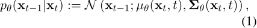
where θ are learnable parameters of the diffusion model. Ho et al. (2020) parameterize the mean µθ(xt, t) using ϵθ, a denoising autoencoder that predicts ϵ from given xt:

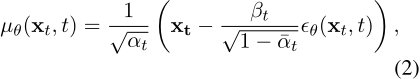
where αt = 1 - βt, ¯αt = ∏︁ts=1 αs, and the variance is fixed as Σθ(xt, t) = βtI. The models are trained to predict the noise ϵ ∼ N(0, I) added during the forward process by minimizing the following objective:

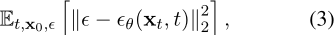
where ϵθ(xt, t) corresponds to the estimated noise for given xt = √ ¯αtx0 + √1 - ¯αtϵ.
Although diffusion models exhibit high fidelity generative performance, their sampling process requires a significant number of iterations, leading to considerable computational and memory costs. To alleviate this, latent diffusion models have been proposed (Rombach et al., 2022b; He et al., 2022), where the diffusion process operates in a lower-dimensional latent space rather

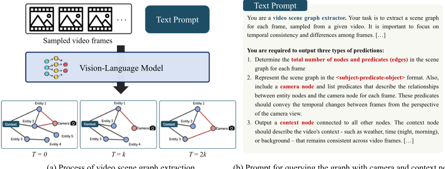
(a) Process of video scene graph extraction
(b) Prompt for querying the graph with camera and context node

Sampled video frame (T = k)
Nodes: Woman, Vehicle, Hot Air Balloons
Predicates: (Woman, walking towards, Vehicle), (Hot Air
Balloons, floating above, Vehicle), (Hot Air Balloons,
floating above, Woman)
Camera Predicates: (Woman, moving right, Camera)
Context Node: Dusk with Hot Air Balloons
An example of a video in graph-structured form
Figure 2: Example of a derived graph from a video frame using the vision-language model. The scene graph captures relational knowledge between entities as well as the camera view.
than the pixel space. Using an encoder E, Gaussian noise is progressively added to the latent variable z0 = E(x0) to obtain zt. The training objective in the latent space is similarly defined as: Et,z0,ϵ [︂∥ϵ - ϵθ(zt, t)∥22]︂. This approach significantly reduces computational overhead while maintaining generative quality, making diffusion models scalable to high-dimensional data.
Video diffusion model Inspired by the success of diffusion models in image generation, video generation has been explored using diffusion-based approaches (Ho et al., 2022; Singer et al., 2023; He et al., 2022; Zhang et al., 2024; Chen et al., 2024; Wang et al., 2023, 2024b; Fei et al., 2024; Zeng et al., 2024; Lee et al., 2024; Weng et al., 2024). To leverage the strong performance of image generative models and improve training efficiency, several methods utilize image generative models by decomposing content and motion synthesis (Yu et al., 2024; Qing et al., 2024) or incorporating temporal layers between spatial layers (Blattmann et al., 2023; Zheng et al., 2024; Wang et al., 2024c; Guo et al., 2024). However, decomposing spatial and temporal attention poses challenges for modeling dynamic motion, as temporal attention is performed at the same spatial position. To mitigate the distribution shift in low-resolution videos caused by the separate training of spatial and temporal layers, VideoCrafter2 (Chen et al., 2024) jointly trains these layers on low-resolution videos and then fine-tunes the spatial modules on high-quality images. Recently, to further enhance text-to-video alignment, various works introduce human preference learning (Yuan et al., 2024). Nevertheless, while existing approaches explicitly improve alignment with text, incorporating underlying real-world physics knowledge into video generation remains underexplored.
3 Proposed Method
In this section, we now present our framework for incorporating real-world physics knowledge into video diffusion models. Given their ability to capture intricate individual trajectories and multientity interactions over time, temporal graphs serve as a natural choice for encoding relational knowledge to guide video generation. We design a graphbased representation format to model video frames, through which we extract graph-structured knowledge from videos using Vision-Language Models (VLMs), as described in Section 3.1. These graph-structured representations are then processed through a combination of text encoders and Graph Neural Networks (GNNs) before being injected into the intermediate visual representations of diffusion models via a cross-attention mechanism (Section 3.2). To ensure the assimilation of graph-based knowledge, we introduce a graph-aligned denoising loss that supervises the model to conform to the provided graphs during video generation (Section 3.3).

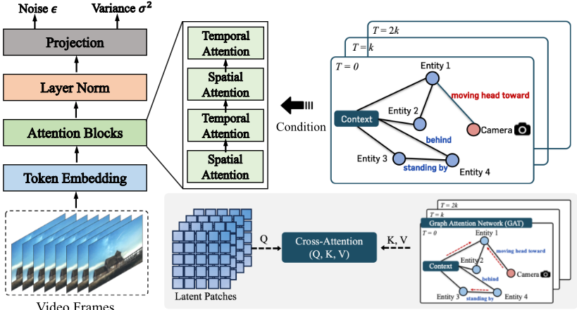
Figure 3: Illustration of graph-conditioned video generation on a latent diffusion model. Video scene graphs are integrated into attention blocks using cross-attention operations with latent patches, guiding the model to generate compositional videos that reflect real-world physics.
3.1 Representing Video in Graph-Structure
We begin by transforming video frames from the training data into graph structures specially designed to represent real-world physics and interactions between entities. Here, to capture such relational knowledge and temporal dynamics, we employ a VLM (Wang et al., 2024a) to leverage its general commonsense and scene understanding capabilities for graph extraction from videos. To guide the VLM in generating the desired graph structure, we adopt the in-context learning scheme (Dong et al., 2022; Brown et al., 2020); providing detailed instructions, including example output graphs. The prompt used for graph extraction is presented in Figure 1.
The VLM is tasked with predicting three types of outputs: (1) identifying the total number of entities (nodes) and relations (edges) in each frame, (2) structuring the graph in the <subject-predicateobject> format, and (3) inserting two specialized nodes: a camera node and a context node. The camera node is introduced to encode temporal and dynamic information within the graph. The edges connecting the camera node to other object nodes capture their movements relative to the camera's perspective. For instance, if an object is approaching the camera, this can be described as an edge with the attribute labeled "heading toward." Additionally, the context node is inserted and connected to all other nodes. It encodes information consistently shared across videos, such as background, weather, and style. This context node feature is propagated to all entities during the node embedding acquisition process, which will be described in the next section. An example of the obtained graph is illustrated in Figure 2. We demonstrate the capability of our pipeline to construct valid graph structures on human-annotated datasets in Section 4.5.
3.2 Graph-Conditioned Video Generation
Armed with video-graph pair data, we describe how we process graphs and explicitly condition graph-structured knowledge within the diffusion process. First, node and edge representations are obtained using text encoders, followed by node embeddings derived from GNN through message passing operations to encode entity features. Edge embeddings are also acquired using a Multi-Layer Perceptron (MLP), which takes input as the concatenation of the subject, predicate, and object attributes. Here, node features from the context node (connected to all nodes) and predicates with camera nodes are also involved in the embedding construction process. For the GNN architecture, without loss of generalizability, Graph Attention Network (GAT) (Veliˇckovi´c et al., 2018; Brody et al., 2022) is employed as the backbone network. To capture temporal dynamics, temporal edges are inserted between graphs when they share common nodes. Since early-stage representations acquired from the GNN and MLP may be detrimental to the finetuning process of pre-trained video diffusion models, we introduce a gating mechanism to incrementally fuse node and edge embeddings. For node and edge attributes xv and xe obtained after the text encoder, we compute their embeddings using the GNN and MLP as:

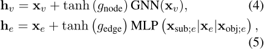
where gnode and gedge are learnable gating parameters initialized to zero and tanh denotes the hyperbolic tangent function. Here, xsub;e and xobj;e represent the node attributes of the subject and object of an edge, respectively. xsub;e|xe|xobj;e denotes the concatenation of the subject, predicate, and object attributes.
To adapt a video latent diffusion model to be a graph-conditional generator, we implement crossattention between the node hv and edge embeddings he of graphs and latent spatial patches within the attention block during the forward pass (Figure 3). In this process, the spatial patches function as queries, while the node and edge representations serve as keys and values. Specifically, for a latent frame zk at timestep k, we project node and edge representations h(k) 1 , . . . , h(k) |V |+|E| obtained from the graph neural network with corresponding timestep's graph with projection function τθ, where V and E are the set of nodes and edges, respectively. Then, we conduct cross-attention as Attention(Q,K,V) = Softmax (︂ QK⊤ √d )︂ · V
with:

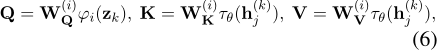
where φi(zk) represents intermediate representations for a layer i and a frame corresponding to timestep k in the diffusion model, W(i) Q ,W(i) K ,W(i) V are linear transforms, and d is the dimension of query and key vectors. Note that, after performing cross-attention mechanisms, we acquire transitional representations for frames that do not have corresponding graphs at specific timesteps by interpolating the representations of temporally adjacent frames.
Similar to the acquisition of node and edge embeddings, we also employ a gating mechanism for cross-attention. Specifically, for a latent frame zk and diffusion timestep t, we incorporate the results of cross-attention as:

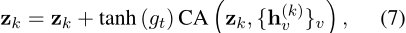
where t represents the embedding of diffusion timestep t and gt = gcrossLinear(t), with gcross initialized to zero. Here, CA and Linear denote the cross-attention and the linear layer, respectively.
3.3 Graph-Aligned Denoising Loss (GADL)
While conditioning video scene graphs within the diffusion process introduces real-world relational knowledge, it lacks explicit supervisory signals to ensure strict adherence to the provided graphs during video generation. To address this, we propose Graph-Aligned Denoising Loss (GADL), an objective function designed to align the conditioned graphs with the generated videos by incorporating graph modifications, such as node additions and deletions, directly into the denoising process. The intuition behind here is that, given synchronized edited video-graph pairs, the original video x is forwarded through the diffusion model conditioned on a modified graph, where nodes have been added or removed. The model is then trained to denoise latents according to the modified graph and align them with the target denoised latent frames (ground truth), obtained by applying noise to the paired edited video x′ .
GADL builds upon the denoising process in DDPM (Ho et al., 2020) by leveraging the estimated mean ˜µt-1 at timestep t-1, defined as:

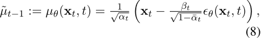
Original Graph Original Video

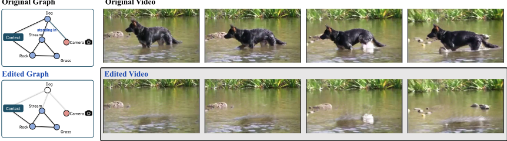
where ϵθ(xt, t) represents the model's noise estimation, βt is the variance schedule, αt = 1 - βt, and ¯αt = ∏︁ts=1 αs. After estimating the mean ˜µt-1 at timestep t-1, the GADL objective minimizes the discrepancy between the predicted mean ˜µt-1 and the expected latent posterior q(x′t-1 | x′ 0), which corresponds to the noise-added latents of the edited video (aligned with the modified graph) using identical sampled noise. The GADL loss function is formulated as:

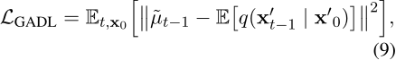
where q(x′t-1 | x′0 ) represents the posterior distribution of latent frames x′0 , derived from synchronized edited video-graph pairs. The identical noise ϵ ∼ N(0, I) is applied to both the original video x and the edited video x′ during the diffusion process. By minimizing this loss, GADL enforces alignment between the denoising process and the graph-conditioned modifications, ensuring that the model adheres to the modified graph structure.
To train the model with GADL, we curate synchronized video-graph pairs by applying a video inpainting model (Li et al., 2022) to video segmentation datasets (Wu et al., 2024; Xu et al., 2018). Specifically, we use videos where certain objects are removed along the temporal axis using the video inpainting model, creating paired graphs in which nodes corresponding to the deleted objects are also removed. These edited videos serve as target latents, enabling the model to learn how graph modifications correspond to video changes. This framework also offers a notable advantage: explicit video controllability through graph modifications. Unlike language-based video editing approaches, graph structures provide a direct and interpretable means to specify which entities to modify by adding, replacing, or removing nodes and their associated relationships.
4 Experiments
The proposed method is validated by fine-tuning open-source video diffusion models augmented with graph-structured knowledge. Section 4.1 outlines the experimental details, including the finetuning datasets and evaluation protocols. We then demonstrate the effectiveness of our approach across multiple aspects using a comprehensive textto-video benchmark, evaluating both video quality and text-video alignment (Section 4.2), as well as through human evaluation results on public platforms (Section 4.3). Section 4.4 presents a qualitative analysis examining: (1) whether our method promotes the generation of physically plausible videos; and (2) whether the model indeed understands the given graphs, assessed by modifying the conditioned graphs and observing the corresponding changes in the generated videos. Lastly, the accuracy of scene graph prediction using visionlanguage models is explored in Section 4.5.
4.1 Experiment Setup
Implementation details Although our proposed method is compatible with any video latent diffusion model, we employ Open-Sora (Zheng et al., 2024) and VideoCrafter2 (Chen et al., 2024) as backbone pretrained models for our experiments. Open-Sora adopts a Diffusion Transformer (DiT) architecture conditioned on the T5 text encoder (Raffel et al., 2020), with weights initialized using the PixArt-α, text-to-image generation model (Chen et al., 2023). Temporal attention layers are inserted into the model. VideoCrafter2 also utilizes the 3D-UNet, built upon Stable Diffusion (Rombach et al., 2022a), one of the most

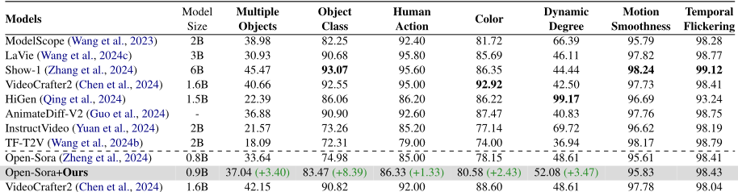
Recognized table text (check against the image)
| Models | Model Size | Multiple Objects | Object Class | Human Action | Color | Dynamic Degree | Motion Smoothness | Temporal Flickering |
|---|---|---|---|---|---|---|---|---|
| ModelScope (Wang et al., 2023) | 2B | 38.98 | 82.25 | 92.40 | 81.72 | 66.39 | 95.79 | 98.28 |
| LaVie (Wang et al., 2024c) | 3B | 30.93 | 90.68 | 95.80 | 85.69 | 46.11 | 97.82 | 98.77 |
| Show-1 (Zhang et al., 2024) | 6B | 45.47 | 93.07 | 95.60 | 86.35 | 44.44 | 98.24 | 99.12 |
| VideoCrafter2 (Chen et al., 2024) | 1.6B | 40.66 | 92.55 | 95.00 | 92.92 | 42.50 | 97.73 | 98.41 |
| HiGen (Qing et al., 2024) | 1.5B | 22.39 | 86.06 | 86.20 | 86.22 | 99.17 | 96.69 | 93.24 |
| AnimateDiff-V2 (Guo et al., 2024) | - | 36.88 | 90.90 | 92.60 | 87.47 | 40.83 | 97.76 | 98.75 |
| InstructVideo (Yuan et al., 2024) | 2B | 21.57 | 73.26 | 85.20 | 77.14 | 69.72 | 96.62 | 98.19 |
| TF-T2V (Wang et al., 2024b) | 2B | 18.09 | 72.31 | 79.00 | 74.00 | 36.94 | 98.17 | 98.79 |
| Open-Sora (Zheng et al., 2024) | 0.8B | 33.64 | 74.98 | 85.00 | 78.15 | 48.61 | 95.61 | 98.41 |
| Open-Sora+Ours | 0.9B | 37.04 (+3.40) | 83.47 (+8.39) | 86.33 (+1.33) | 80.58 (+2.43) | 52.08 (+3.47) | 95.83 | 98.43 |
| VideoCrafter2 (Chen et al., 2024) | 1.6B | 42.15 | 90.82 | 92.00 | 88.60 | 48.61 | 97.78 | 98.04 |
| VideoCrafter2+Ours | 1.7B | 42.68 (+0.53) | 96.12 (+5.30) | 98.00 (+6.00) | 92.35 (+3.75) | 50.00 (+1.39) | 98.06 | 98.48 |
Node replacement

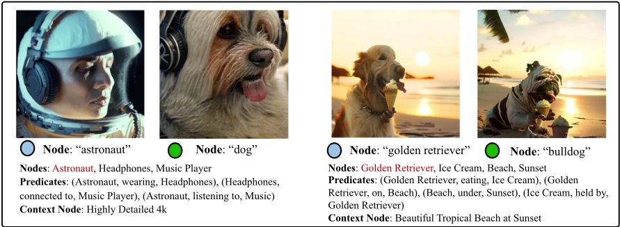
widely used text-to-image generation models. For our experiments, these models are fine-tuned on our curated video-graph pair dataset, with no architectural modifications except for the integration of the graph knowledge injection path. For baseline evaluation, we follow the evaluation protocols of Open-Sora and VideoCrafter2. Experimental details are provided in Appendix B.
Dataset We train the video latent diffusionmodel guided by a graph-structured format to ensure the generated video aligns with the conditioned graphs. For this purpose, we utilize a synchronized edited video-graph pair dataset (Wu et al., 2024), which comprises video object segmentation datasets - YouTube-VOS (Xu et al., 2018) and A2D Sentences (Gavrilyuk et al., 2018), and MeViS (Ding et al., 2023). For both the original and edited videos, we extract graphs representing videos using the Qwen2-VL (Wang et al., 2024a) model, as detailed in Section 3.1. Examples of video-graph pairs are presented in Figure 4 and Appendix E.
Evaluation protocols Our method is evaluated on VBench (Huang et al., 2024), and a user study is conducted. VBench is a comprehensive benchmark suite for video generation that provides multiple well-defined dimensions for fine-grained evaluation. Each dimension category is equipped with a distinct prompt suite and evaluation metric, which have been demonstrated to be well aligned with human perception. To show that our method improves semantic alignment while preserving video quality, dimensions related to both semantic alignment and visual quality are selected. For the user study, the win rate between the baseline and our method is reported. The detailed procedure is provided in Appendix B.4.
4.2 Quantitative Results: Comprehensive Benchmark for Video Generative Model
As shown in Table 1, we evaluate the quality of our generated videos on VBench across seven distinct dimensions. Our method consistently improves overall performance by 3.1% for Open-Sora
Text Prompt: A boat accelerating to gain speed.
Open-Sora

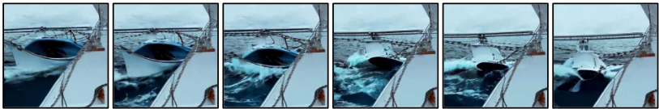

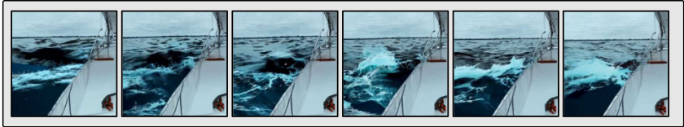
Open-Sora

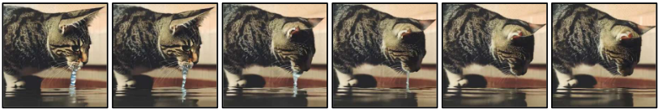
![Figure 6: Qualitative comparison of object compositionality and physical plausibility. For each prompt, the top row shows videos generated by Open-Sora (Zheng et al., 2024), and the bottom row shows results with graphstructured guidance (ours). Open-Sora exhibits compositional inconsistencies, where objects may disappear or appear (e.g., the boat vanishing). It also generates physically implausible behaviors, such as water flowing upward while a cat is drinking. In contrast, our method preserves object consistency across frames and generates motion that better respects real-world physical constraints, resulting in more plausible and coherent videos.](assets/0092-picture.png)
and 4.8% for VideoCrafter2, indicating that incorporating graph-structured knowledge into the generative model is beneficial for generating realistic videos. To further assess the generated videos from different perspectives, we employ additional metrics provided in Appendix C.
4.3 User Study for Real-world Fidelity
We also conduct a human evaluation on the Prolific platform (20 participants) using videos generated by both the baseline and our approach (baseline + Ours). Participants are shown a total of 50 videos, randomly sampled from multiple dimensions of text prompts for video generation, and are asked to choose the preferred video based on visual quality, text-video alignment, and realism in simulating real-world scenes. In Figure 8, our method is preferred in 79.50% of the comparisons on average for Open-Sora and VideoCrafter2, indicating stronger alignment with human preferences and a more accurate depiction of real-world scenes.
4.4 Qualitative Analysis
Generated video examples We conduct a case study to demonstrate that our framework enables the model to generate more physically plausible videos resembling real-world dynamics. Example results, compared to the baseline (Zheng et al., 2024), are provided in Figure 6 and Appendix D.
Node addition / deletion

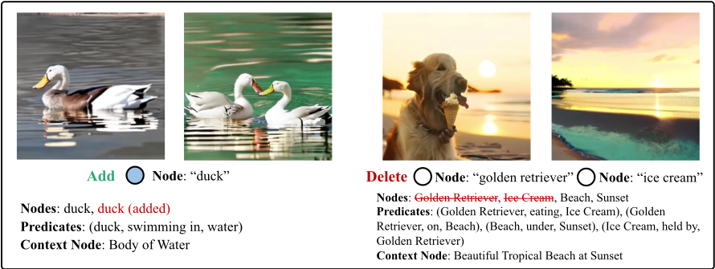

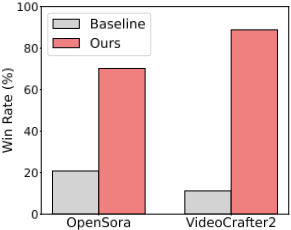
Graph modification We examine whether the proposed Graph-Aligned Denoising Loss and graph-structured conditioning enable the model to comprehend the conditioned graph structures. To this end, we apply node-level modifications - replacement, addition, and deletion - to the input graph and observe the corresponding changes in the generated videos. As shown in Figures 5 and 7, the model adjusts only the modified entities while accurately expressing the rest of the graph structure. For example, in Figure 7, adding a node of the same class as an existing one results in two distinct entities that maintain proper spatial separation. When two nodes are removed, the video clearly omits the corresponding objects while naturally rendering the remaining content.
4.5 Video Scene Graph Accuracy
To assess the stability and accuracy of the graphextraction pipeline, built upon the commonsense reasoning capabilities of vision-language models, experiments are conducted on 50 randomly sampled scene graphs from two human-annotated video-graph datasets: ImageNet-VidVRD (Jiang et al., 2024) and VidOR (Shang et al., 2019). As shown in Table 2, the proposed pipeline achieves competitive scene graph prediction performance on both benchmarks, with notably high precision scores, indicating a low rate of hallucinated predictions. Notably, the evaluation setting is particularly challenging, as performance is reported using top1 and top-5 recall rather than recall@20. These metrics provide a stricter and more demanding assessment of scene graph prediction quality.

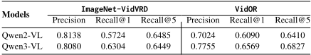
Recognized table text (check against the image)
| Models | ImageNet-VidVRD | VidOR | ||||
|---|---|---|---|---|---|---|
| Precision | Recall@1 | Recall@5 | Precision | Recall@1 | Recall@5 | |
| Qwen2-VL | 0.8138 | 0.5724 | 0.6485 | 0.7024 | 0.6090 | 0.6410 |
| Qwen3-VL | 0.8080 | 0.6304 | 0.6449 | 0.7755 | 0.6569 | 0.6827 |
5 Conclusion
We presented a novel framework for empowering text-to-video diffusion models through the integration of temporal graph-structured knowledge, addressing limitations in real-world physics fidelity and compositional entity interactions. By incorporating video scene graphs with specialized node types and introducing the Graph-Aligned Denoising Loss, our method improves the generation of realistic and compositional videos. Experimental results showed significant improvements in object composition, and qualitative analyses confirmed that the model generates realistic videos.
Limitations
While our framework demonstrates its ability to empower the video diffusion models to generate realistic and physically plausible videos, we have not yet explored its applicability to long video generation - a challenging direction for future work. Maintaining temporal coherence over extended sequences remains a fundamental problem in text-to-video synthesis; longer videos often suffer from repetitive or monotonous content despite increased duration. A promising avenue lies in extending our approach to longer videos by leveraging the predictive potential of video scene graphs - inferring future graphs from current ones to guide the generation process over time. This could enable models to anticipate scene progression and generate temporally consistent, narrative-driven content. Advancing in this direction would further establish graph-structured knowledge as a key component for scalable and physically grounded video generation.
Acknowledgements
This work was partly supported by the Institute of Information & communications Technology Planning & Evaluation (IITP) grant funded by the Korea government (MSIT) (No. RS-2019II190075, Artificial Intelligence Graduate School Program (KAIST), No. RS-2024-00457882, AI Research Hub Project, No. 2022-0-00713, Metalearning applicable to real-world problems, No.RS2025-02305581, Development of Vision-Language Model (VLM)-Based Intelligent Video Security Monitoring Techno,ogy) and the National Research Foundation of Korea (NRF) grant (No.RS-202300209060, A Study on Optimization and Network Interpretation Method for Large-Scale Machine Learning) funded by the Korea government (MSIT). This work was also supported by the InnoCORE program of the Ministry of Science and ICT (No. N10250156).
References
Jinze Bai, Shuai Bai, Shusheng Yang, Shijie Wang, Sinan Tan, Peng Wang, Junyang Lin, Chang Zhou, and Jingren Zhou. 2023. Qwen-vl: A versatile vision-language model for understanding, localization, text reading, and beyond. arXiv preprint arXiv:2308.12966.
Andreas Blattmann, Robin Rombach, Huan Ling, Tim Dockhorn, Seung Wook Kim, Sanja Fidler, and Karsten Kreis. 2023. Align your latents: Highresolution video synthesis with latent diffusion models. In Proceedings of the IEEE/CVF Conference on Computer Vision and Pattern Recognition, pages 22563-22575.
Shaked Brody, Uri Alon, and Eran Yahav. 2022. How attentive are graph attention networks? In International Conference on Learning Representations.
Tom Brown, Benjamin Mann, Nick Ryder, Melanie Subbiah, Jared D Kaplan, Prafulla Dhariwal, Arvind Neelakantan, Pranav Shyam, Girish Sastry, Amanda Askell, and 1 others. 2020. Language models are few-shot learners. Advances in neural information processing systems, 33:1877-1901.
Haoxin Chen, Yong Zhang, Xiaodong Cun, Menghan Xia, Xintao Wang, Chao Weng, and Ying Shan. 2024. Videocrafter2: Overcoming data limitations for highquality video diffusion models. In Proceedings of the IEEE/CVF Conference on Computer Vision and Pattern Recognition, pages 7310-7320.
Junsong Chen, Jincheng Yu, Chongjian Ge, Lewei Yao, Enze Xie, Yue Wu, Zhongdao Wang, James Kwok, Ping Luo, Huchuan Lu, and Zhenguo Li. 2023. Pixart-α: Fast training of diffusion transformer for photorealistic text-to-image synthesis. Preprint, arXiv:2310.00426.
Henghui Ding, Chang Liu, Shuting He, Xudong Jiang, and Chen Change Loy. 2023. MeViS: A large-scale benchmark for video segmentation with motion expressions. In ICCV.
Qingxiu Dong, Lei Li, Damai Dai, Ce Zheng, Jingyuan Ma, Rui Li, Heming Xia, Jingjing Xu, Zhiyong Wu, Tianyu Liu, and 1 others. 2022. A survey on incontext learning. arXiv preprint arXiv:2301.00234.
Hao Fei, Shengqiong Wu, Wei Ji, Hanwang Zhang, and Tat-Seng Chua. 2024. Dysen-vdm: Empowering dynamics-aware text-to-video diffusion with llms. In Proceedings of the IEEE/CVF Conference on Computer Vision and Pattern Recognition, pages 76417653.
Guilherme Fernandes, Vasco Ramos, Regev Cohen, Idan Szpektor, and João Magalhães. 2025. Latent beam diffusion models for generating visual sequences. arXiv preprint arXiv:2503.20429.
Kirill Gavrilyuk, Amir Ghodrati, Zhenyang Li, and Cees GM Snoek. 2018. Actor and action video segmentation from a sentence. In Proceedings of the IEEE conference on computer vision and pattern recognition, pages 5958-5966.
Yuwei Guo, Ceyuan Yang, Anyi Rao, Zhengyang Liang, Yaohui Wang, Yu Qiao, Maneesh Agrawala, Dahua Lin, and Bo Dai. 2024. Animatediff: Animate your personalized text-to-image diffusion models without specific tuning. In The Twelfth International Conference on Learning Representations.
Yingqing He, Tianyu Yang, Yong Zhang, Ying Shan, and Qifeng Chen. 2022. Latent video diffusion models for high-fidelity long video generation. arXiv preprint arXiv:2211.13221.
Jonathan Ho, Ajay Jain, and Pieter Abbeel. 2020. Denoising diffusion probabilistic models. Advances in neural information processing systems, 33:68406851.
Jonathan Ho, Tim Salimans, Alexey Gritsenko, William Chan, Mohammad Norouzi, and David J Fleet. 2022. Video diffusion models. Advances in Neural Information Processing Systems, 35:8633-8646.
Ziqi Huang, Yinan He, Jiashuo Yu, Fan Zhang, Chenyang Si, Yuming Jiang, Yuanhan Zhang, Tianxing Wu, Qingyang Jin, Nattapol Chanpaisit, Yaohui Wang, Xinyuan Chen, Limin Wang, Dahua Lin, Yu Qiao, and Ziwei Liu. 2024. VBench: Comprehensive benchmark suite for video generative models. In Proceedings of the IEEE/CVF Conference on Computer Vision and Pattern Recognition.
Xinjie Jiang, Chenxi Zheng, Xuemiao Xu, Bangzhen Liu, Weiying Zheng, Huaidong Zhang, and Shengfeng He. 2024. Vrdone: One-stage video visual relation detection. In Proceedings of the 32nd ACM International Conference on Multimedia, pages 1437-1446.
Taegyeong Lee, Soyeong Kwon, and Taehwan Kim. 2024. Grid diffusion models for text-to-video generation. In Proceedings of the IEEE/CVF Conference on Computer Vision and Pattern Recognition, pages 8734-8743.
Zhen Li, Cheng-Ze Lu, Jianhua Qin, Chun-Le Guo, and Ming-Ming Cheng. 2022. Towards an end-to-end framework for flow-guided video inpainting. In Proceedings of the IEEE/CVF conference on computer vision and pattern recognition, pages 17562-17571.
Xin Ma, Yaohui Wang, Gengyun Jia, Xinyuan Chen, Ziwei Liu, Yuan-Fang Li, Cunjian Chen, and Yu Qiao. 2024. Latte: Latent diffusion transformer for video generation. arXiv preprint arXiv:2401.03048.
Alexander Quinn Nichol and Prafulla Dhariwal. 2021. Improved denoising diffusion probabilistic models. In International conference on machine learning, pages 8162-8171. PMLR.
Zhiwu Qing, Shiwei Zhang, Jiayu Wang, Xiang Wang, Yujie Wei, Yingya Zhang, Changxin Gao, and Nong Sang. 2024. Hierarchical spatio-temporal decoupling for text-to-video generation. In Proceedings of the IEEE/CVF Conference on Computer Vision and Pattern Recognition, pages 6635-6645.
Colin Raffel, Noam Shazeer, Adam Roberts, Katherine Lee, Sharan Narang, Michael Matena, Yanqi Zhou, Wei Li, and Peter J. Liu. 2020. Exploring the limits of transfer learning with a unified text-to-text transformer. Journal of Machine Learning Research, 21(140):1-67.
Robin Rombach, Andreas Blattmann, Dominik Lorenz, Patrick Esser, and Björn Ommer. 2022a. Highresolution image synthesis with latent diffusion models. In Proceedings of the IEEE/CVF conference on computer vision and pattern recognition, pages 10684-10695.
Robin Rombach, Andreas Blattmann, Dominik Lorenz, Patrick Esser, and Björn Ommer. 2022b. Highresolution image synthesis with latent diffusion models. In Proceedings of the IEEE/CVF conference on computer vision and pattern recognition, pages 10684-10695.
Chitwan Saharia, William Chan, Saurabh Saxena, Lala Li, Jay Whang, Emily L Denton, Kamyar Ghasemipour, Raphael Gontijo Lopes, Burcu Karagol Ayan, Tim Salimans, and 1 others. 2022. Photorealistic text-to-image diffusion models with deep language understanding. Advances in neural information processing systems, 35:36479-36494.
Xindi Shang, Donglin Di, Junbin Xiao, Yu Cao, Xun Yang, and Tat-Seng Chua. 2019. Annotating objects and relations in user-generated videos. In Proceedings of the 2019 on International Conference on Multimedia Retrieval, pages 279-287.
Uriel Singer, Adam Polyak, Thomas Hayes, Xi Yin, Jie An, Songyang Zhang, Qiyuan Hu, Harry Yang, Oron Ashual, Oran Gafni, and 1 others. 2023. Make-avideo: Text-to-video generation without text-video data. In The Eleventh International Conference on Learning Representations.
Yang Song, Jascha Sohl-Dickstein, Diederik P Kingma, Abhishek Kumar, Stefano Ermon, and Ben Poole. 2021. Score-based generative modeling through stochastic differential equations. In International Conference on Learning Representations.
Petar Veliˇckovi´c, Guillem Cucurull, Arantxa Casanova, Adriana Romero, Pietro Liò, and Yoshua Bengio. 2018. Graph attention networks. In International Conference on Learning Representations.
Jiuniu Wang, Hangjie Yuan, Dayou Chen, Yingya Zhang, Xiang Wang, and Shiwei Zhang. 2023. Modelscope text-to-video technical report. arXiv preprint arXiv:2308.06571.
Peng Wang, Shuai Bai, Sinan Tan, Shijie Wang, Zhihao Fan, Jinze Bai, Keqin Chen, Xuejing Liu, Jialin Wang, Wenbin Ge, Yang Fan, Kai Dang, Mengfei Du, Xuancheng Ren, Rui Men, Dayiheng Liu, Chang Zhou, Jingren Zhou, and Junyang Lin. 2024a. Qwen2vl: Enhancing vision-language model's perception of the world at any resolution. arXiv preprint arXiv:2409.12191.
Xiang Wang, Shiwei Zhang, Hangjie Yuan, Zhiwu Qing, Biao Gong, Yingya Zhang, Yujun Shen, Changxin Gao, and Nong Sang. 2024b. A recipe for scaling up text-to-video generationwith text-free videos. In Proceedings of the IEEE/CVF Conference on Computer Vision and Pattern Recognition, pages 6572-6582.
Yaohui Wang, Xinyuan Chen, Xin Ma, Shangchen Zhou, Ziqi Huang, Yi Wang, Ceyuan Yang, Yinan He, Jiashuo Yu, Peiqing Yang, and 1 others. 2024c. Lavie: High-quality video generation with cascaded latent diffusion models. International Journal of Computer Vision, pages 1-20.
Wenming Weng, Ruoyu Feng, Yanhui Wang, Qi Dai, Chunyu Wang, Dacheng Yin, Zhiyuan Zhao, Kai Qiu, Jianmin Bao, Yuhui Yuan, and 1 others. 2024. Art-v: Auto-regressive text-to-video generation with diffusion models. In Proceedings of the IEEE/CVF Conference on Computer Vision and Pattern Recognition, pages 7395-7405.
Thaddäus Wiedemer, Yuxuan Li, Paul Vicol, Shixiang Shane Gu, Nick Matarese, Kevin Swersky, Been Kim, Priyank Jaini, and Robert Geirhos. 2025. Video models are zero-shot learners and reasoners. arXiv preprint arXiv:2509.20328.
Jianzong Wu, Xiangtai Li, Chenyang Si, Shangchen Zhou, Jingkang Yang, Jiangning Zhang, Yining Li, Kai Chen, Yunhai Tong, Ziwei Liu, and 1 others. 2024. Towards language-driven video inpainting via multimodal large language models. In Proceedings of the IEEE/CVF Conference on Computer Vision and Pattern Recognition, pages 12501-12511.
Ning Xu, Linjie Yang, Yuchen Fan, Jianchao Yang, Dingcheng Yue, Yuchen Liang, Brian Price, Scott Cohen, and Thomas Huang. 2018. Youtube-vos: Sequence-to-sequence video object segmentation. In Proceedings of the European conference on computer vision (ECCV), pages 585-601.
Sihyun Yu, Weili Nie, De-An Huang, Boyi Li, Jinwoo Shin, and Anima Anandkumar. 2024. Efficient video diffusion models via content-frame motion-latent decomposition. In The Twelfth International Conference on Learning Representations.
Hangjie Yuan, Shiwei Zhang, Xiang Wang, Yujie Wei, Tao Feng, Yining Pan, Yingya Zhang, Ziwei Liu, Samuel Albanie, and Dong Ni. 2024. Instructvideo: Instructing video diffusion models with human feedback. In Proceedings of the IEEE/CVF Conference on Computer Vision and Pattern Recognition, pages 6463-6474.
Yan Zeng, Guoqiang Wei, Jiani Zheng, Jiaxin Zou, Yang Wei, Yuchen Zhang, and Hang Li. 2024. Make pixels dance: High-dynamic video generation. In Proceedings of the IEEE/CVF Conference on Computer Vision and Pattern Recognition, pages 8850-8860.
David Junhao Zhang, Jay Zhangjie Wu, Jia-Wei Liu, Rui Zhao, Lingmin Ran, Yuchao Gu, Difei Gao, and Mike Zheng Shou. 2024. Show-1: Marrying pixel and latent diffusion models for text-to-video generation. International Journal of Computer Vision, pages 1-15.
Zangwei Zheng, Xiangyu Peng, Tianji Yang, Chenhui Shen, Shenggui Li, Hongxin Liu, Yukun Zhou, Tianyi Li, and Yang You. 2024. Open-sora: Democratizing efficient video production for all.
Appendix
A Computation Overhead Analysis
Averaged wall-clock time comparisons between the proposed method and baseline backbone models for video generation are reported, measured on a single NVIDIA RTX A6000 GPU. The total wallclock time is decomposed into two components: graph extraction and video generation. The proposed method increases the video generation time from 30.98 s to 33.68 s for VideoCrafter2, and from 95.55 s to 107.29 s for Open-Sora, with an additional 3.41 s incurred for graph extraction. While graph conditioning introduces modest overhead, this analysis clarifies the Pareto trade-off between computational cost and performance.

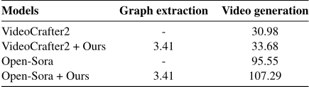
Recognized table text (check against the image)
| Models | Graph extraction | Video generation |
|---|---|---|
| VideoCrafter2 | - | 30.98 |
| VideoCrafter2 + Ours | 3.41 | 33.68 |
| Open-Sora | - | 95.55 |
| Open-Sora + Ours | 3.41 | 107.29 |
B Experimental Setup
B.1 Dataset Statistics

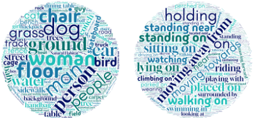
Our dataset comprises a total of 10,977 videograph pairs, with 5,833 nodes and 1,415 edges. Word clouds reflecting word frequency are shown in Figure 9. Among nodes, terms like 'man', 'person', and 'woman' appear frequently, while, for edges, camera-related terms such as 'moving towards' and 'moving away from' are common.
B.2 Backbone architectures
We use Open-Sora (Zheng et al., 2024) and VideoCrafter2 (Chen et al., 2024) as our backbone architectures. Both Open-Sora and VideoCrafter2 extend the image generative diffusion models, PixArt-α (Chen et al., 2023) and Stable Diffusion (Rombach et al., 2022a), respectively, by adding temporal attention layers at each block. Specifically, Open-Sora consists of 28 blocks, each incorporating spatial and temporal self-attention, cross-attention with text representations, and feedforward networks.
B.3 Training details
The following describes the hyperparameters and fine-tuning protocols. For Open-Sora (Zheng et al., 2024), the model is fine-tuned with a learning rate of 2 × 10-5 at a video resolution of 512×512. For VideoCrafter2, the pretrained model is also finetuned with a learning rate of 1 × 10-5 at a video resolution of 320×512. The GADL weight is set to 0.2 for both architectures.
Instructions for the user study
You are invited to participate in a research study evaluating videos generated by AI models. In this study, you will assess 50 videos. For each pair, you will be presented with a text prompt and two corresponding videos.
Your task is to:
Select the video that is overall superior, considering: visual quality, alignment with the given prompt, and realism of motion and adherence to physical laws (i.e., the video should depict motions that are plausible and not violate the laws of physics). We recommend making your selection within 25 seconds per pair to maintain focus and reduce fatigue.
This study aims to enhance our understanding of AI models' capabilities in producing visually appealing and semantically accurate videos.
There are no right or wrong answers, and please provide your honest opinion. Your responses will remain anonymous and will be used solely for research purposes.
B.4 User study details
We perform a user study via the Prolific platform to evaluate the realism, overall quality, and text-video alignment of the generated videos. Specifically, for each text-to-video model, we randomly sample 50 generated videos from ours and the baseline using VBench (Huang et al., 2024). We recruit 20 paid participants from diverse countries through Prolific. During recruitment, we provide participants with detailed information and clear instructions, as shown above. For each video pair, participants are asked: "Considering both video quality and alignment with the prompt, which video is better overall?" Each participant is compensated at a rate of £6 per hour.
C Additional Alignment Evaluation
The method is evaluated using diverse alignment metrics: CLIP-T, CLIP-I, and DINO-I, following Fernandes et al. (2025). In Table 4, our method outperforms the baseline across all metrics. Interestingly, the performance gain is more pronounced on DINO-I. This is because DINO representations align more closely with human judgments and capture object-level information within frames more effectively than CLIP.

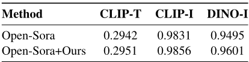
Recognized table text (check against the image)
| Method | CLIP-T | CLIP-I | DINO-I |
|---|---|---|---|
| Open-Sora | 0.2942 | 0.9831 | 0.9495 |
| Open-Sora+Ours | 0.2951 | 0.9856 | 0.9601 |
D Qualitative Study of Generated Videos
We present qualitative examples to highlight the effectiveness of our graph-conditioned video generation framework. We compare our method (OpenSora (Zheng et al., 2024) + Ours) against the baseline Open-Sora across a diverse set of text prompts, focusing on two major aspects: object compositionality and physical plausibility. For each prompt, we visualize the generated videos as a sequence of frames. Each video sample has a duration of 2 seconds at 8 FPS (frames per second), resulting in a total of 16 frames per video. In each figure, we display every third frame in temporal order (i.e., frames indicate 0,3,6,9,12,15) to represent the temporal progression of the video.
Object Compositionality Scenarios. Figure 6 (top) and Figure 10 (top) show qualitative comparisons on scenarios that require consistent handling of multiple objects throughout the video sequence. In Open-Sora, we observe frequent failures in object persistence and composition where objects may spontaneously vanish (e.g., the boat disappears in the latter frames) or appear inconsistently (e.g., the rider vanishes from the horse). These artifacts reflect the model's lack of explicit understanding of entity relationships and scene structure, leading to videos that are misaligned with the input prompt and real-world plausibility.
Our method addresses these issues by conditioning the generation process on explicit scene graphs that capture the relationships, dynamics, and context of entities within each frame. As a result, our approach produces videos with consistent object presence and accurate interactions, eliminating spurious object disappearance or emergence. This demonstrates the benefit of leveraging graph-structured knowledge to enforce compositional fidelity and maintain global scene coherence throughout the generated sequences.
Physically Implausible Scenarios. Figure 6 (bottom) and Figure 10 (bottom) highlight the cases where the Open-Sora generates physically unrealistic motions or dynamics. In the "cat drinking water" example, the water stream unnaturally flows upward against gravity. In the "motorcycle cruising" example, the Open-Sora erroneously generates reversed background motion, making it appear as though the motorcycle is moving backwards, which violates real-world physical constraints.
In contrast, our method generates videos that better respect real-world physics and object dynamics. The generated frames exhibit natural water flow and correct motion alignment between the subject and background, leading to more plausible and coherent visual outputs. These results validate that explicit relational and temporal guidance from scene graphs can substantially improve the physical realism and fidelity of text-to-video models beyond what is achievable through text-only conditioning.
E Examples of Synchronized Edited Video-Graph Pair
Figure 11 presents example data points of the synchronized edited video-graph pairs used for model training (see Section 4.1 and Figure 4). Each pair consists of an original video and scene graph, alongside an edited version in which specific nodes (objects) have been removed from the graph and the corresponding video. In the visualization, deleted objects are indicated by a white dotted box for clarity. These synchronized pairs provide direct supervision for learning howmodifications in the conditioned graph (such as node deletion) should be reflected in the generated video. This enables the model to establish a strong correspondence between graph structure and visual content during training, as discussed in our proposed GraphAligned Denoising Loss (GADL), in equation (9).
Text Prompt: A person is riding or walking with horse.
Open-Sora

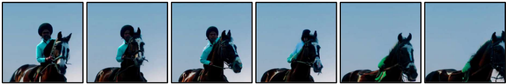

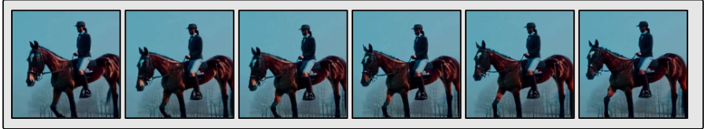
Text Prompt: A motorcycle cruising along a coastal highway.
Open-Sora

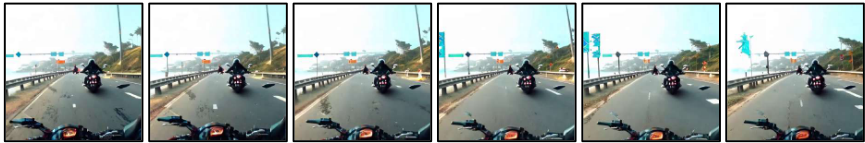
![Figure 10: Qualitative comparison of object compositionality and physical plausibility. For each text prompt, the top row shows videos generated by Open-Sora (Zheng et al., 2024), while the bottom row shows videos generated by Open-Sora guided by graph-structured knowledge (ours). In the horse-riding example, our method better preserves the compositional relationship between the person and the horse across frames. In the motorcycle example, Open-Sora produces physically implausible motion patterns, such as reversed background motion that gives the impression of the motorcycle moving backward. In contrast, our method generates motion dynamics that better respect real-world physical constraints and directions, resulting in more plausible videos.](assets/0202-picture.png)
Original Graph Original Video

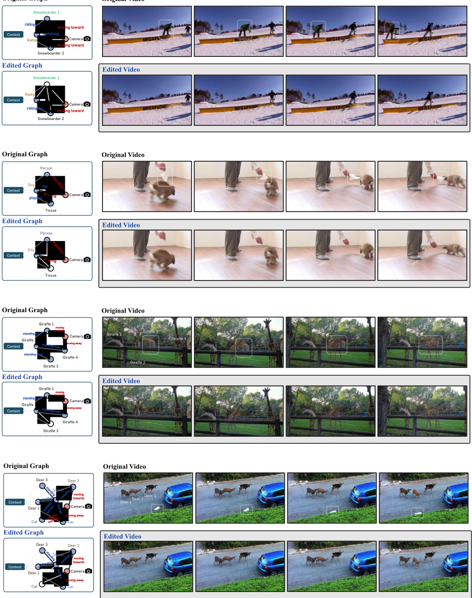